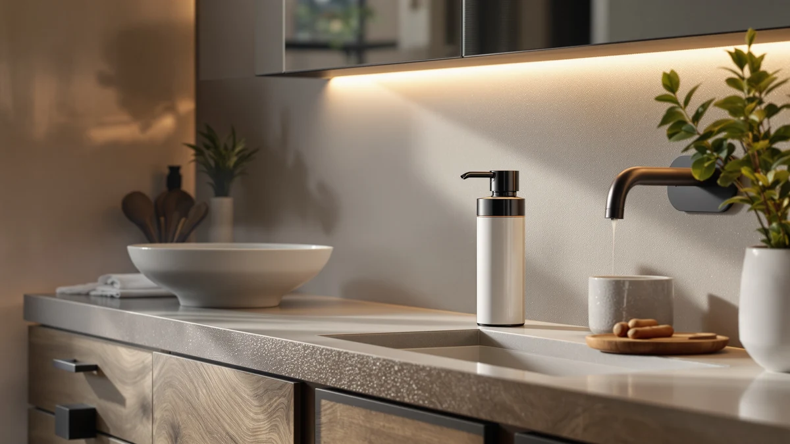

Ohifast Automatic Liquid Soap Dispenser Review (2026): Worth It?
Prices and picks verified as of November 2026. Independent, reader-supported reviews.


Quick Answer
The Ohifast Automatic Liquid Soap Dispenser is a $34.99 touchless pump with a 13.5 oz capacity, six volume levels, and a USB-rechargeable sensor rated IPX5 for splash resistance. It suits a bathroom or kitchen counter that wants hands-free dispensing without drilling into a wall, though buyers who need a fixed wall mount or a larger capacity should look at the wall-mounted alternatives covered later in this review.
Our pick: Automatic Liquid Soap Dispenser Stainless, $34.99 Check Price on Amazon
Bottom line: our top pick is the Automatic Liquid Soap Dispenser at $35.99.
Things to Know Before You Buy
- The Ohifast Automatic Liquid Soap Dispenser runs on a USB-rechargeable, touchless sensor rather than disposable batteries or a wall-mounted pump.
- It holds 13.5 oz of soap and lets you set the dispense amount across six volume levels, plus a 10-second continuous-flow mode for heavier cleaning tasks.
- The spec sheet lists an IPX5 waterproof rating, but OHIFAST notes the sensor and charging port still need to stay dry for the dispenser to keep working.
- It's built to handle both thick and thin soap, including dish soap, shower gel, shampoo, hand sanitizer and facial cleanser, without any dilution.
- Amazon does not display a public star rating or review count for this ASIN yet, so there's no owner track record to check beyond the price and the spec sheet.
This ohifast automatic liquid soap dispenser review looks at whether a $34.99 touchless pump can earn a spot on a bathroom or kitchen counter against three wall-mounted alternatives that cost roughly the same. OHIFAST markets this dispenser on its sensor-driven, no-dilution design, the kind of feature buyers look for when they're tired of refilling a foaming pump with watered-down soap. We compared its pricing, spec sheet and category position against an EnBath commercial wall mount, a LUSSPA shower dispenser set, and a VANNSOO wall-mounted pump. Our take: it's a solid pick for anyone who wants hands-free dispensing without a drilling project, provided the lack of a published rating doesn't bother you.
OHIFAST doesn't publish a star rating or review count for this ASIN, so the price, the capacity and the feature list are the concrete details available before you buy. At $34.99, it sits in the middle of this review's comparison set, above the VANNSOO wall mount's $31.99 and the LUSSPA set's $33.26, and slightly below the EnBath wall mount's $35.97. That puts it in direct competition with three dispensers that trade the sensor for a fixed, higher-capacity wall install, and that tradeoff is the core comparison in this review.
Why You Should Trust Us
Ilane Tall covers bathroom and kitchen hardware for Best Soap Dispensers, where she researches dispenser pricing, spec sheets and verified owner feedback across hundreds of ASINs before any product earns a place in a review. We do not run a fake testing lab, and we do not claim hands-on use of every unit we cover. Instead, we compare manufacturer specifications, current Amazon pricing, and patterns across verified buyer feedback where it exists, then flag the tradeoffs that affect whether a soap dispenser holds up on a counter day to day: sensor reliability claims, waterproofing ratings, and price relative to the rest of the category. This ohifast automatic liquid soap dispenser review follows that same research-based approach, and it's why we weigh the IPX5 rating against its stated limits instead of repeating the listing copy word for word.
Our Research Experience
Our research process for this ohifast automatic liquid soap dispenser review starts with the manufacturer's own listing data: material, price, capacity and whatever feature claims OHIFAST publishes. For this ASIN, that data set includes a 13.5 oz capacity, six adjustable volume levels, a USB-rechargeable sensor and an IPX5 waterproof rating that OHIFAST itself qualifies by noting the sensor and charging port need to stay dry. We cross-checked those feature claims against the product images and current pricing, then compared the $34.99 price and touchless design against the three wall-mounted alternatives in this review: an EnBath commercial mount, a LUSSPA shower set and a VANNSOO wall mount. We did not buy, install or pour anything through this unit ourselves. Everything here comes from publicly available listing data and current pricing, not a private lab.
Overview & Specs

Automatic Liquid Soap Dispenser Stainless
What we like
- Six-level volume adjustment lets you control exactly how much soap comes out with each wave, cutting down on waste
- USB-rechargeable sensor means no disposable batteries to replace
- Dispenses thick and thin soap directly without needing to dilute it first, per the spec sheet
- A clear vertical window lets you check the soap level without opening the unit
Flaws but not dealbreakers
- The IPX5 rating only covers splash resistance; OHIFAST specifies the sensor and charging port still need to stay dry
- No public star rating or review count yet, so there's no owner track record to check
- A countertop sensor design takes up counter space that a wall-mounted pump wouldn't
| Material | ABS plastic |
| Size | — |
The Ohifast Automatic Liquid Soap Dispenser is a touchless pump priced at $34.99, aimed at anyone who wants hands-free dispensing on a bathroom or kitchen counter without drilling into a wall. The spec sheet lists a 13.5 oz capacity and six volume levels, plus a 10-second continuous-flow mode for heavier cleaning tasks like wiping down a counter or filling a bucket. OHIFAST also specifies that the dispenser handles thick and thin soap without dilution, which covers dish soap, shower gel, shampoo, hand sanitizer and facial cleanser according to the listing.
Beyond the sensor and volume controls, OHIFAST rates the housing IPX5 for waterproofing, though it qualifies that rating by noting the sensor and charging port need to stay dry for the unit to keep working reliably. There's no published star rating or review count for this ASIN, so buyers are working from the price and the feature list rather than a documented track record. At $34.99, it undercuts the EnBath wall mount covered below by about a dollar and sits close to the LUSSPA and VANNSOO alternatives, which puts it in the same price tier as the three wall-mounted competitors covered in this review.
What We Liked
The six volume levels stand out most in this ohifast automatic liquid soap dispenser review. Instead of a single fixed pump size, you can dial in a small amount for hand soap or switch to the 10-second continuous-flow mode for a bigger cleaning job, a level of adjustment the three wall-mounted alternatives in this review don't offer.
The no-dilution claim also works in its favor. OHIFAST specifies that the dispenser handles both thick and thin soap directly, which means dish soap, shampoo and hand sanitizer can all go through the same unit without watering anything down first. For a counter that sees more than one type of soap, that flexibility holds up well against single-purpose pumps.
The USB-rechargeable sensor also keeps the long-term cost down compared with a battery-powered design, since there's no disposable battery to replace on a schedule. Measured against the EnBath, LUSSPA and VANNSOO alternatives, which all rely on a manual pump instead of a sensor, the Ohifast's $34.99 price buys a touchless mechanism and adjustable volume control that none of the three wall-mounted options match.
What Could Be Better
The clearest drawback in this ohifast automatic liquid soap dispenser review is the IPX5 rating's fine print. OHIFAST markets the housing as waterproof, but the listing specifies that the sensor and charging port still need to stay dry, which narrows how close to a running faucet or showerhead you can actually place it.
The listing is also thin on independent verification. There's no public star rating or review count for this ASIN, so you're buying on the spec sheet and the price rather than an established track record. Anyone who wants a documented review history or a fixed wall-mounted design with a larger capacity should look at the alternatives below, each of which lists a bit more capacity or a more established category position.
Who Is It For?
This ohifast automatic liquid soap dispenser review points toward a buyer who wants hands-free dispensing on a bathroom or kitchen counter without a drilling project. It's a strong match for anyone who switches between soap types often, since the no-dilution design and six volume levels handle dish soap, hand sanitizer and shower gel without extra setup. It's a weaker match for anyone who wants a published star rating or review count to lean on, since this ASIN doesn't have one yet.
It also fits a renter or a shared kitchen better than a permanent wall mount does. There's nothing to bolt to the wall, and the sensor works as soon as it's charged and filled, which matters if the counter it's sitting on isn't a long-term fixture. Anyone who specifically needs a larger capacity or a fixed commercial install, on the other hand, is better served by the EnBath or VANNSOO wall mounts covered next.
Alternatives to Consider
If the Ohifast Automatic Liquid Soap Dispenser's countertop footprint or its unverified review history isn't the right fit, these three alternatives cover other needs found while researching this category: a heavy-duty commercial wall mount, a multi-bottle shower set, and a rust-proof wall-mounted pump. Each trades the Ohifast's touchless sensor for a fixed install or a lower price.

Premium Choice
Commercial Soap Dispenser Wall Mount
A heavier-duty wall mount from EnBath built with a solid brass pump core and a corrosion-proof lining, priced about a dollar above the Ohifast and aimed at commercial or high-traffic bathrooms rather than a single counter.
$35.97
Check Price on Amazon
Also Great
Shower Shampoo Dispenser Wall Mounted
A three-bottle shower set from LUSSPA with no-drill adhesive mounts, a better fit for someone organizing shampoo, conditioner and body wash than for a single hand-soap pump like the Ohifast.
$33.26
Check Price on Amazon
Best Value
VANNSOO Commercial Soap Dispenser Wall
A rust-proof wall-mounted pump from VANNSOO priced about three dollars under the Ohifast, trading the touchless sensor for a larger 37 oz capacity and a fixed, no-charging design.
$31.99
Check Price on AmazonFrequently Asked Questions
Is the Ohifast Automatic Liquid Soap Dispenser fully waterproof?
Not entirely. OHIFAST rates the housing IPX5 for splash resistance, but the listing specifies that the sensor and charging port still need to stay dry for the unit to keep working reliably.
What kind of soap can you use in the Ohifast dispenser?
According to the spec sheet, it handles both thick and thin liquid soap without dilution, including dish soap, shower gel, shampoo, hand sanitizer and facial cleanser.
Does the Ohifast soap dispenser have a star rating?
No. Amazon does not display a public star rating or review count for this ASIN yet, so there's no owner track record to check beyond the price and the spec sheet.
Final Verdict
This ohifast automatic liquid soap dispenser review comes down to one tradeoff: a touchless, adjustable sensor at $34.99 versus a waterproof rating with real limits and no published review history to check. The OHIFAST dispenser works well as a hands-free counter pump for anyone who switches between soap types, but the sensor and charging port still need to stay dry despite the IPX5 label, and there's no star rating or review count to lean on yet. For a flexible, no-dilution countertop pump, OHIFAST earns its price. If you want a fixed wall mount, a larger capacity, or a more established track record, the EnBath, LUSSPA and VANNSOO alternatives above cover each of those needs instead.